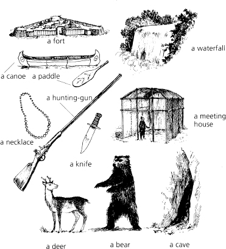

故事背景資料
地點：哈德遜河上的霍瑞肯湖。作者用佐治湖稱呼它。(查察地圖。)佗佇北美洲東部。到今，該地區被認為是紐約州。故事發生佇北美洲未獨立前。北美洲佇 1787 年脫離歐洲獨立。
時間：1757 年。英國佮法國軍隊佇北美洲作戰。兩國攏欲得著該塊土地。

印地安人佇遮生活幾千年。伊是咧該塊土地取得食物。伊是佇河川佮湖泊中捕捉魚。伊是佇樹林中狩獵鹿、熊佮鳥。伊是食該等動物的肉。伊是利用動物的皮毛來做衫。
有許濟不同的印地安部落，抑是家族。這个是佇哈德遜河附近居住的幾個部落：

1607 年，英國人來著北美洲。1608 年，法國人嘛來著。伊是獵殺動物。伊是將動物柔軟的皮毛帶返歐洲。
無偌久，愈來愈濟歐洲人來著。伊是欲得著印地安人的土地。法國佮英國的國王派兵去北美洲。兵是砌堅固的堡壘來居住。兵是帶來槍枝。印地安人替英國佮法國軍隊而戰。佇這个故事中，休倫族替法國作戰。莫霍克族替英國作戰。

備註：聖徒 (例：聖羅倫斯)